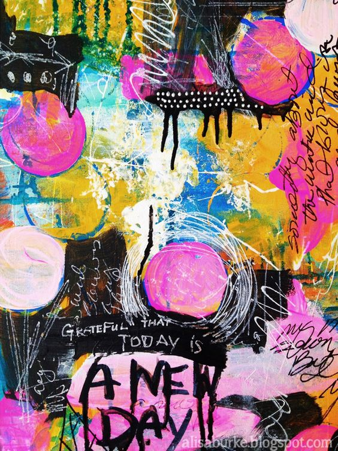
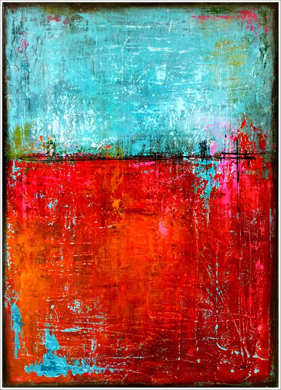
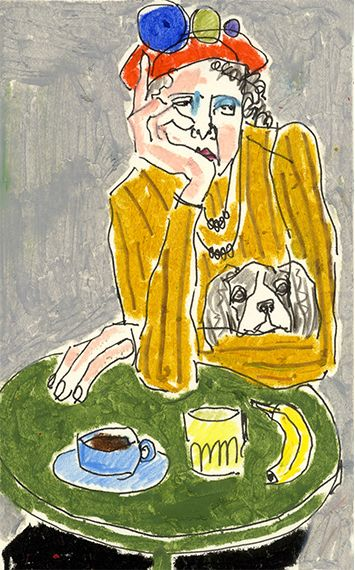
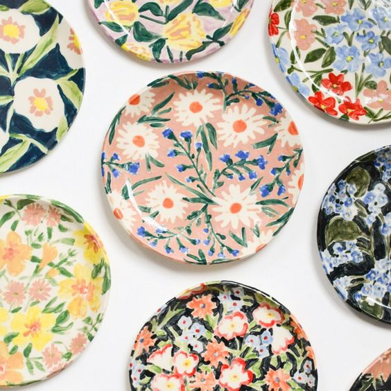
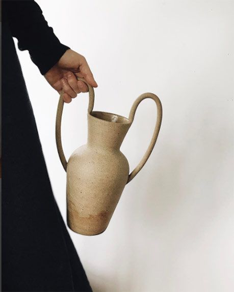
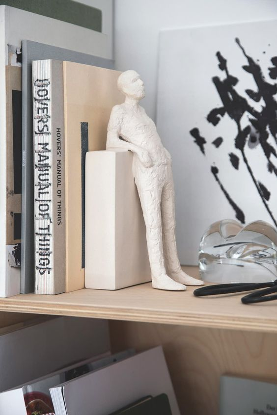

Absztrakt képek
 Mindig szerettem kísérletezni a stílusok között. Szeretem többrétegűen ábrázolt képeket. Érdekes, hogy minden ember mást és mást gondol ezek mögé.
karakter ábrázolás

Sok-sok területen kipróbáltam magamat, emiatt széleskörű tapasztalatot szereztem. Egyik kedvenc elfoglaltságom megfigyelni más emberek, lények, állatok attitűdjeit és az kihangsúlyozva papírra vinni a természetüket.
Kerámiák
  Mindig is szerettem volna alkotni és az évek alatt sokindent kiprobáltam, de a fő hobbimat a kerámiázásban találtam meg. Most már magabiztosan használom a koronozót de szívesen kísérletezek más technikákkal is.